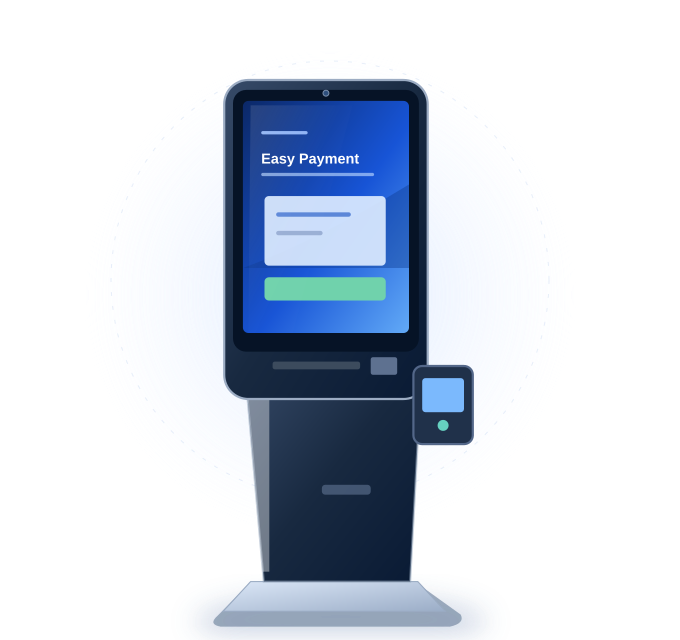
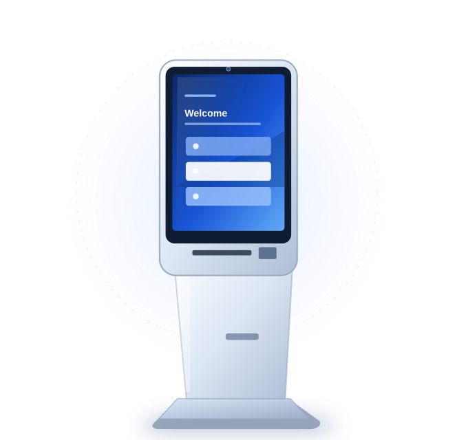
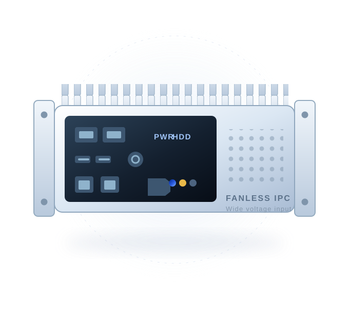
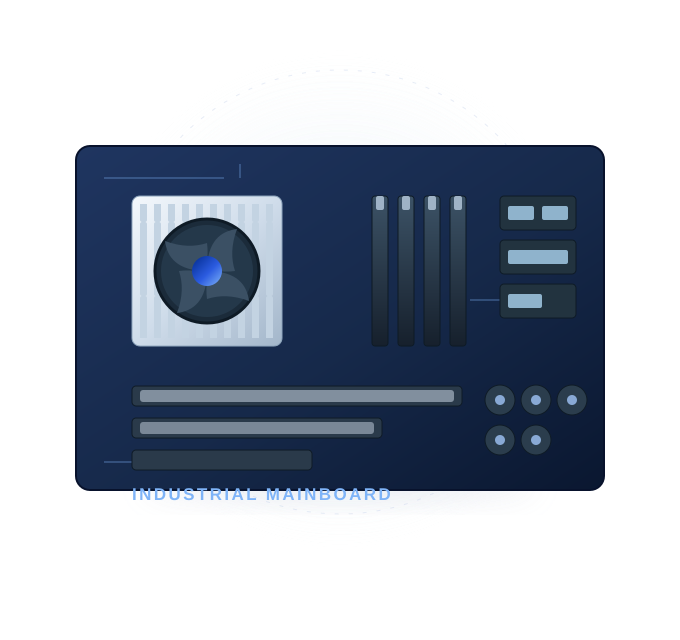
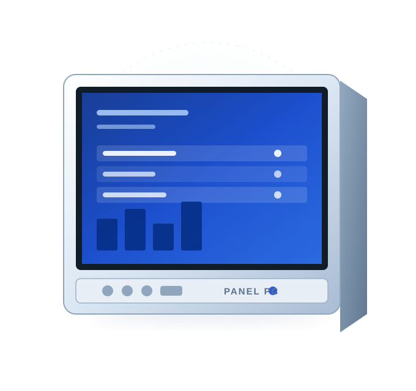
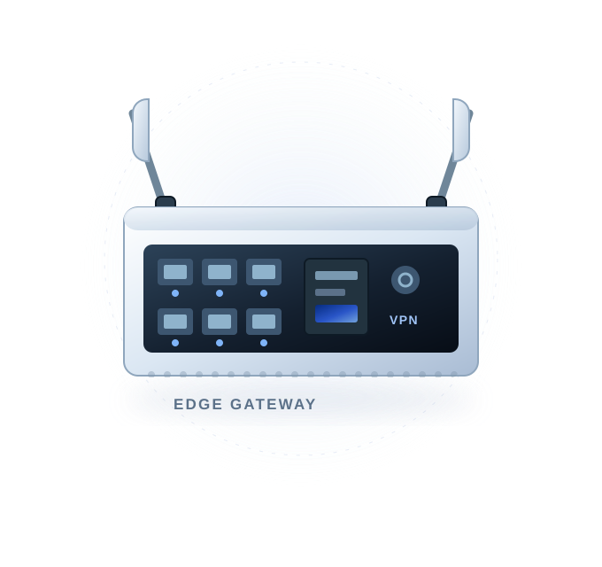

Restaurant & Retail
Self-Ordering Kiosks
TouchscreenTouchscreen ordering terminals designed around the restaurant or retail customer journey.
Floor-standing, counter-top and wall-mounted touchscreen terminals for self-ordering, self-payment, check-in, ticketing and information service, configured for OEM and ODM projects.
A complete range of self-service terminal categories for customer-facing applications.
Touchscreen ordering terminals designed around the restaurant or retail customer journey.

Payment-ready kiosk hardware layouts with space for scanners, printers and third-party payment devices.

Check-in and registration terminal layouts for visitor, hospitality and service environments.

Ticket issuing and queue management terminals for customer-facing service locations.
Interactive information and wayfinding terminals for public spaces and commercial venues.
Compact touch-enabled self-service terminals for spaces where a floor-standing kiosk will not fit.
The computing hardware behind self-service kiosks, control cabinets and field equipment.

Compact fanless industrial computer with a finned aluminium chassis, wide-voltage input and the I/O count self-service cabinets need.

Board-level options for kiosk and automation projects that need a specific form factor, I/O count and long-term supply.

All-in-one panel computers combining a touchscreen, computing platform and I/O in one enclosure for operator stations and equipment HMIs.

Compact industrial gateways for protocol conversion, data acquisition and secure remote access between field devices and cloud platforms.
Each terminal is defined by the task users complete: ordering, payment, registration, ticketing or information lookup.
Printer, scanner, camera, NFC/RFID reader and payment-device mounting planned with the enclosure.
OEM & ODM support for cabinet size, colour, logo, screen orientation, platform and interface requirements.
Requirement review, specification discussion and prototype validation before a project moves to production.
Kiosk buying guides, OEM/ODM checklists and deployment advice.
A practical method for defining kiosk application, display, peripherals, operating system and deployment conditions before requesting a quotation.
→2026-10-24What to prepare for an OEM or ODM kiosk RFQ, including cabinet design, modules, software, certifications, test samples and project milestones.
→2026-10-24Compare kiosk installation styles by footprint, viewing height, serviceability, peripherals and customer traffic patterns.
→